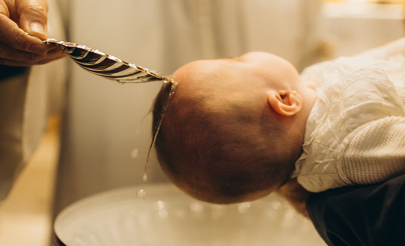
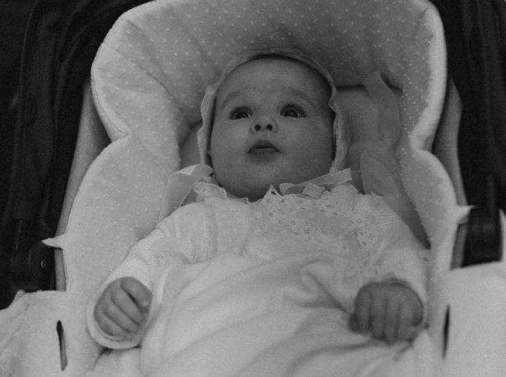
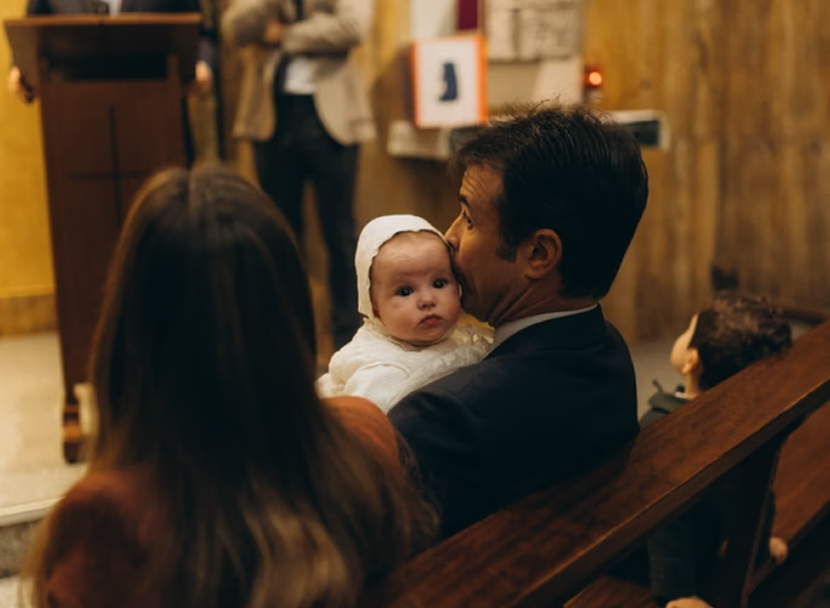
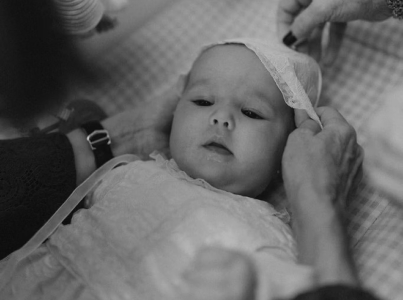

What to Expect From a Baptism Photo Session in Barcelona
Most baptism sessions begin quietly at home before the ceremony. This part of the day often becomes one of the most emotional sections of the gallery. Parents dress the baby, grandparents arrive, and the atmosphere slowly shifts from preparation to anticipation. I usually photograph the baptism dress, shoes, candle, small accessories, and the subtle moments happening naturally around the family.
During this stage, there is no pressure to pose perfectly. I gently guide the family when needed while allowing authentic interactions to unfold naturally. Some of the most beautiful photographs come from small in-between moments – a mother fixing the baby’s sleeve, a father holding the child near the window, or grandparents watching quietly from the side.
Inside the church ceremony, I work discreetly and respectfully without interrupting the ritual. The focus stays entirely on the sacred moment while I document the emotional details around it – the water blessing, candle lighting, prayers, emotional reactions of the parents, and quiet smiles exchanged between godparents.
After the ceremony, we usually create relaxed family portraits outside the church or nearby. This is often the first moment when everyone exhales and fully enjoys the celebration. We photograph grandparents, close relatives, children, and guests while the emotions are still fresh and genuine.

Why Baptism Photos Matter More Than You Think
Whether you are planning a wedding, family session, love story, or personal portrait, I create photographs that reflect real emotions and genuine connections. Based in Barcelona, I focus on delivering a relaxed experience and images that feel natural, cinematic, and lasting.

Best Locations for a Baptism Ceremony in Barcelona
Sagrada Família
One of the most iconic churches in Barcelona. The dramatic architecture and colorful natural light create a majestic atmosphere for baptism photography.
Santa Maria del Mar
A beautiful Gothic church with softer and more intimate lighting. Perfect for emotional and cinematic photographs with historic character.
Barcelona Cathedral
The cathedral offers grand architecture and elegant interiors. It creates a timeless and ceremonial feeling throughout the gallery.
Iglesia de Sant Vicente de Sarrià
A peaceful church located in one of Barcelona’s calm residential areas. The atmosphere feels warm, traditional, and family-oriented.
Sant Ot de Sarrià
Known for its quiet atmosphere and beautiful soft light. Ideal for families looking for a more intimate church ceremony.
Saint Mary Queen Parish
This church combines elegant architecture with peaceful surroundings. The nearby Pedralbes area also works beautifully for family portraits afterward.
Oratori de Santa Maria de Bonaigua
A smaller and more private chapel with a very calm atmosphere. Perfect for families who prefer warmth and intimacy over grandeur. The choice of church strongly influences the mood of the final gallery. Large cathedrals create a feeling of ceremony and grandeur, while smaller chapels often feel warmer and more personal. Both can look beautiful – the atmosphere simply changes the emotional tone of the photographs.

How to Prepare for a Baptism Photoshoot
Clothing and Styling
Clothing plays an important role in creating timeless family portraits. I usually recommend soft and neutral colors such as white, beige, cream, light gray, or pastel tones. These colors reflect natural light beautifully and keep the focus on emotions rather than clothing.
It is better to avoid bright logos, large prints, and very contrasting patterns. Coordinated outfits always make family photographs feel calmer and more harmonious without looking overly styled.
Details and Accessories
Small details often become some of the most meaningful photographs in the gallery. The baptism dress, candle, personalized pillow, baptism cross, or small family heirlooms deserve attention because they are deeply connected to the story of the day.
I also recommend arriving around 15 – 20 minutes earlier than necessary. This allows time for calm preparation and avoids unnecessary stress before the church ceremony begins.

What to Do If Your Baby Cries During the Photo Session
First of all – this is completely normal. Babies cry, become tired, need feeding breaks, or simply react to unfamiliar surroundings. A baptism session is built around the rhythm of the child, not the other way around.
In fact, emotional moments often create the most touching photographs. Parents comforting their baby, grandparents helping quietly, or a small pause during the ceremony can become some of the most sincere images in the entire gallery.
A few simple things can help during the session:
- bring a favorite toy or pacifier
- allow extra time without rushing
- stay calm because babies immediately feel parental stress
- do not worry about “perfect behavior”
An experienced photographer always adapts to the child’s rhythm. Patience is part of the process, and meaningful photographs come naturally when everyone feels relaxed and supported.
Many families who first contacted me as their family photographer Barcelona later returned for baptisms and other important milestones. Watching families grow and preserving these emotional moments over the years is one of the most meaningful parts of my work.
If you would like to see examples of real baptism galleries, you can explore my portfolio here: Portfolio. You can also learn more about the service on my baptism page: Baptism Photographer in Barcelona. If you have questions or simply want to discuss your plans calmly, feel free to Contact Me. Sometimes a short conversation is the easiest way to understand what kind of memories you truly want to preserve.